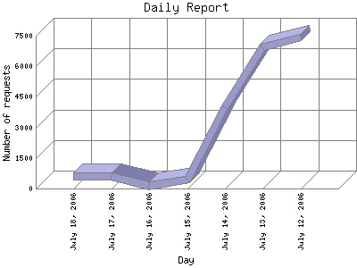

The Daily Report identifies the activity for each day within the reporting period. Remember that one page hit can result in several server requests as the images for each page are loaded.

| Day | Number of requests | Number of page requests | |
|---|---|---|---|
| 1. | July 12, 2006 | 7,430 | 37 |
| 2. | July 13, 2006 | 6,936 | 60 |
| 3. | July 14, 2006 | 3,977 | 31 |
| 4. | July 15, 2006 | 443 | 24 |
| 5. | July 16, 2006 | 146 | 17 |
| 6. | July 17, 2006 | 608 | 16 |
| 7. | July 18, 2006 | 626 | 55 |
Most active day July 13, 2006 : 60 pages sent.
Daily average: 30 pages sent. 2520.75 requests handled. 24.487 KB bytes served.
This report was generated on July 19, 2006 03:35.
Report time frame July 12, 2006 05:31 to July 18, 2006 23:50.
| Web statistics report produced by: | |
| analog 5.1 | Report Magic for Analog 2.10 |